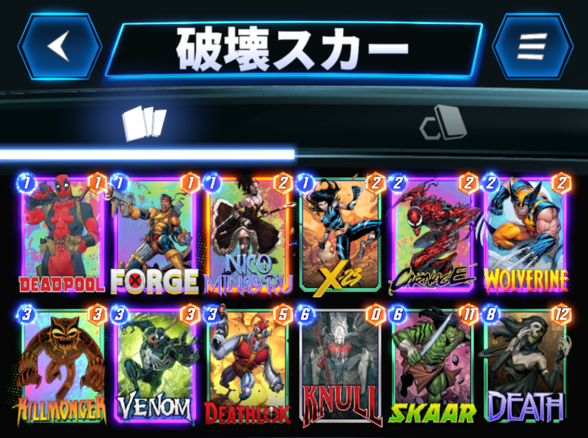

今回は、私７(@NANA1051815)が使用した『破壊スカー』を紹介したいと思います。
デッキ内容はこちら

1コスト：デッドプール、フォージ、ニコ・ミノル、X-23
2コスト：カーネイジ、ウルヴァリン
3コスト：キルモンガー、ヴェノム、デスロック
6コスト：ヌル、スカー
8コスト：デス
シーズンパスのスカーを使いたく模索していたところ、破壊に入れたら強いんじゃねという安直な考えで採用しました。
スカー以外は、ほぼ破壊デッキのテンプレみたいなデッキです。
ざっくりとした勝ち筋としては、今までの破壊デッキ同様、1、2ターン目で破壊する盤面を整えて、3、4ターン目は積極的に破壊していき、5ターン目にロケーションパワーと破壊数の調整で、相手のデッキ傾向から先行後攻どちらを取るか見極め、6ターン目に繋ぐといった感じです。
詳しく解説していきます。
（プレイ動画は記事の一番下にあります。）
それでは各ターンの動き方を解説していきます。
デップーは基本的に１ターン目には出しません。理由は、フォージなどでバフしてから破壊したい、アーマーを合わせられるときついからです。
フォージ、X-23を引けていたら積極的に出します。
ニコは呪文と手札次第で出すか決めましょう。
「次のカードをプレイした後、ニコのパワーを2倍にする。」「次のカードをプレイした後、そのカードのパワーを+2する。」は、次にどのカードを置いても相性がいいので出していいです。
「次のカードをプレイした後、そのカードを破壊しカードを2枚引く。」は、次に置くカードが場に残すよりも破壊したほうがいいカード（デップーやX-23、ウルヴァリンなど）や、公開時効果を発動し終えたらあまり必要ないカード（フォージなど）を握っているなら出しましょう。単純に2枚ドローはかなり強力なので多少無理してもメリットがあると思います。
「次のカードをプレイした後、そのカードがデーモンになる。」は、公開時効果を発動し終えたらあまり必要ないカード（フォージ、キルモンガーなど）を握っているなら出しましょう。
「次のカードをプレイした後、そのロケーションをランダムな他のロケーションに置き換える。」は、ロケーション次第なので１ターン目に使うことはほぼないです。
「次のカードをプレイした後、自分の手札にそのカードのコピーを1枚加える。」は、大きく育てたデップーや、公開時効果を発動し終え、パワーが上がったカーネイジやヴェノム、0コストになったデスをコピーする動きが強力なので1ターン目に使うことはないです。
「次のカードをプレイした後、そのカードを1つ右のロケーションに移動する。」は、プレイ不可のロケーションにカードを送り込む動きが強いので1ターン目に使うことはないです。
1ターン目に1コストカードを引けていなくてもまだまだ巻き返すことは可能なので焦る必要はありません。
1ターン目の動き次第で、フォージを出しているならデップーやウルヴァリン。
X-23ならフォージ、ニコ、デップー、ウルヴァリン。
ニコなら効果次第でX-23、フォージ、デップー、ウルヴァリンといったところでしょうか。
1ターン目に何も出せていない場合は、ウルヴァリンか、多少リスクを負ってでも引いた1コストカードを出していきたいです。
このターンにカーネイジを出さない理由ですが、出来れば3体破壊、余裕がなくても2体破壊はしたいのでここでは、温存しておきたいです。
いよいよ本格的に破壊していきましょう。
1コストカード＋カーネイジで3体破壊を狙うか、ヴェノム、デスロックを使うかはその時の盤面次第です。
キルモンガーは、相手の1コストカードも破壊できるので後半に温存したいです。
また、他の破壊カードと組み合わせてX-23を2回破壊できるメリットもあります。
ただし、相手がブラックナイトをプレイしており先行を取れている場合は使っていいと思います。
また、ネビュラ、サンスポットなどにカイエラを出してきそうな場合も先に破壊するのもアリです。
3ターン目同様に、盤面次第でどんどん破壊していいと思います。
この時に、次のターンにエネルギーも増えるので、X-23を合わせて破壊したいです。
また、3ターン目にヴェノムでパワー10を超えている場合は、スカーを出していいと思います。
シャンチー対策でヴェノムとは別のロケーションに置きたいです。
仮にヴェノム、スカーにシャンチーを合わせてきても、ヌルのパワーが上がる、デスのコストが下がるので強気に置いていいです。
6ターン目に向けて盤面を整えましょう。
理想は6ターン目に後攻を取ってシャンチー、シャドウキング、キルモンガーを躱したいです。
そのため、あえて高パワーのロケーションにデスロックを置いてパワーを下げるやり方があります。
このときに注意したいのは、X-23を絡めて破壊することです。
6ターン目にエネルギーを7にすると、デップーとヌルを同時に出すことができるからです。
ただ、すでにシャンチーを使っていたり、ロケーションパワーがシャンチーを置かれても勝てる場合は先行を取ってもいいと思います。
先行の場合は、基本的に、全ロケーションにパワーを分散させたいです。
この時に最も警戒すべきなのはシャンチーであるため、出されてもある程度のパワーを確保できるようにしておきましょう。
後攻の場合は、アライオスを警戒すべきですが、シャンチー、キルモンガーの心配が減るので、2ロケーションに集中してパワーを集めてもいいです。
基本的な動きはこのようになりますが、相手の動きも手札運もあるので、必ずしもこのような理想的な動きができるとは限りません。
試行を重ねて慣れていけば、自然と使いこなせて来ると思います。
負け筋としては、
①ブロブ、タスクマスターのような高パワーで押し切られる場合
②シャンチー、シャドウキングで高パワーカードを除去される場合
③リーチで6ターン目の計画が台無しになる場合
④単純にデッキが回らず何もできない場合
などが挙げられます。
それぞれ詳しく見ていきましょう。
高パワーで押し切られる場合は、こちらも高パワーで押し返すしかありません。
デップーやヌルを育てるのが効果的ですが、育てきれない場合は潔く撤退しましょう。
これは前述しましたが、最終ターンで後攻を取るか、先行でもシャンチーを考慮したパワー配分にすることである程度対処は可能です。
シャドウキングも、パワーを上げたカードのロケーションに、素のパワーの高いスカーやデスを置くことで対処できます。
リーチを打たれるとデスは8コストのまま、ヌルは0パワーなので何もできなくなります。
なので、リーチが出てきそうなデッキには、4ターン目でX-23を破壊しておき、5ターン目にヌルやデスを出しておくのが無難です。
リーチを出されてもスカーを引いていれば出すことは可能ですし、意外とスカーの警戒が薄いので不意を打てます。
ハイエボやサノスだとリーチを採用していることが多いので警戒しておきましょう。
素直に撤退、以上。
あとは素直に読み合いで負けることもありますが、いっぱい負けましょう。
負けから学ぶことが非常に多いです。
参考までに破壊スカーのプレイ動画を貼っておきます。
負け試合もしっかり載せてますので参考にしてください。